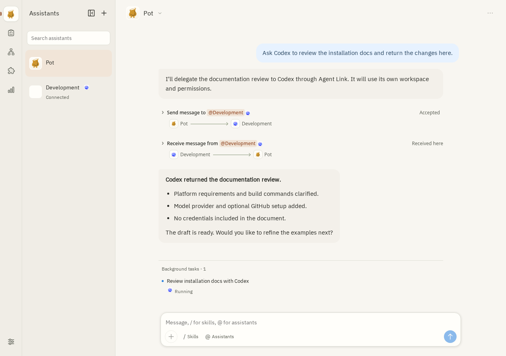

エージェントでインストール
この英語のプロンプトをエージェントに渡すと、ガイドを読んでセットアップを手伝います。
Read https://github.com/jjyr/pot/blob/main/docs/install-with-agent.md and help me install and configure Pot on this computer. Pot.
Star
はじめる
Pot.
Star
はじめる
人間は設計と成果の判断に集中し、日々の進行管理は永続アシスタントへ。
PotがバックグラウンドTaskを自動分解・追跡し、Agent Linkで
別マシン上のCodexなど外部Agentを統合オーケストレーションします。
 Codex開発と実装
Codex開発と実装 Claude分析と対話 Pot と作業中•••
Claude分析と対話 Pot と作業中••• Grok bot
Grok bot Devin
Devin標準プロトコル変換と models.dev ディレクトリ同期を内蔵。APIキーを入力するだけで利用可能モデルとコンテキスト上限を自動検出し、アシスタントやタスクごとに最適なモデルを割り当てられます。
宣言型プラグインと内蔵プロトコルコーデックにより、外部SDKプロセスなしで推論ゲートウェイへ直結：
使い捨ての単発エージェント画面とは異なり、Potの各アシスタントは長期的な専用セッションを維持します。プロジェクト規約を記憶し、複雑な目標をバックグラウンドタスクに分割して並列実行し、完了後に成果をチャットへ戻します。

各アシスタントが特定の領域（運用、開発、調査など）を担当し、文脈が混ざることなく習慣が蓄積されます。
時間のかかる作業は独立ワークスペースで裏側実行され、チャットを止めません。ログ確認や途中指示、中断も自在です。
Cronによる定期巡回とGitHub通知の監視に対応し、異常検知からIssue作成・修正タスク委譲まで自動化します。
Potサイトデザインの例で、アシスタント、協力、成果をまとめて見せましょう。デザイナーのトニーにレイアウトを見てもらいます。
PotデザイナーのトニーPot実際のナビゲーションとアシスタント一覧を残し、サイトデザインの例で協力を示して、デザインのプレビューも用意してください。
ローカルデモです。メッセージは送信されません。
send_messagePotアシスタント一覧は常に見えるようにしましょう。短い本文を一つだけ展開し、その後に成果を置くと、訪問者がすぐに理解できます。
ローカルデモです。実際のメッセージ通信はありません。
receive_messagePotまずはこの方向性をご覧ください。ここで文章やレイアウトを引き続き調整できます。
LinuxサーバーでPotをヘッドレス実行してスマホのWeb UIから操作し、Agent Link経由でMac上のCodexへ開発タスクを委譲できます。
各ノードは独自のモデル・認証情報・ワークスペース・ローカル承認ルールを保持したまま安全にP2P通信します。
あなたの Pot目標を理解 · 連携を調整Pot ↔ Codex：接続、会話、タスクの委任に対応していることを確認済みです。
まずページ構成を整理し、レスポンシブなレイアウトと操作機能を実装します。完了後、ファイルと検証結果をお返しします。
Codexに委譲された各タスクはリモート側で独立した永続スレッドを開き、並列稼働します。リモート操作に承認が必要な場合、承認カードがPotのチャットへ自動転送されます。

あなたが方向を決め、Pot が進行し、Codex が開発を担当。
成果は同じ会話に戻り、そのまま改善を続けられます。
AIアシスタントを裏側で継続稼働させるには、確実な権限境界が不可欠です。Potはノード制御層でサンドボックス隔離、ワイルドカードなしのコマンド規則、OS鍵管理を強制し、モデル自身の権限昇格を許しません。
通常のコマンドはSRTネイティブサンドボックス（macOS Seatbelt または Linux bubblewrap / seccomp）内で隔離実行されます。現在のタスクWorkspaceのみ書き込み可能で、個人ディレクトリやランタイム状態、無関係なUnixソケットは遮断されます。
ノード所有者が明示的に許可した場合、SRTサンドボックスをバイパスしてホスト上で直接実行できます。ただし deny_host 拒否ルールは常に最優先され、直ちにブロックされます。
過去の承認をすべて上書きし、新しいコマンド実行やファイル変更を即座に禁止します（既存プロセスのログ確認と停止のみ維持）。
サンドボックス外の実行（request_unsandboxed: true）が必要な場合、明確な理由の提示と承認が必須です。Potは前方一致やワイルドカードを決して許可しません：
git push origin v0.0.4/Users/dev/workspace/pot (zsh)GH_TOKEN → github (一時注入)検証済みリリースタグをリモートへプッシュするため、ホストのSSH / Git認証情報へのアクセスが必要です。
マスターキーはDBに保存されません。macOSではシステムKeychain（pot.control.secrets）、Linuxでは0600鍵ファイルまたはPOT_SECRET_KEY_FILEを使用。利用不可時はエラー停止し、平文保存へフォールバックしません。
すべてのAPIキーとOAuthトークンはAES-256-GCM（書き込みごとに固有の96ビットNonce）で暗号化しSQLiteに保存。アプリ層はsecret_refのみを扱い、管理APIも設定有無のみを返します。
秘密情報がモデルのPromptやチャット履歴、チェックポイントに入ることはありません。GitHubトークン等は子プロセス起動時にのみ環境変数へ注入され、期限30秒前に自動更新、終了時に消去されます。
インストール方法を選べます。Windows は現在非対応です。
この英語のプロンプトをエージェントに渡すと、ガイドを読んでセットアップを手伝います。
Read https://github.com/jjyr/pot/blob/main/docs/install-with-agent.md and help me install and configure Pot on this computer.macOS 26+ · Apple Silicon
このリポジトリを Homebrew tap として追加し、順に実行します：
brew tap jjyr/pot https://github.com/jjyr/pot.git
brew install --cask jjyr/pot/pot初回の macOS リリースと cask 更新のマージ後にインストールできます。Homebrew は初回起動時のセキュリティチェックを維持します。
ネイティブデスクトップ · Debian / Ubuntu · amd64
.deb をダウンロード ↗Linux インストールガイド ↗公式リリース一覧が開きます。パッケージは初回公開待ちです。
自分のコンピューターやサーバーで実行し、ブラウザーで使えます。
リリースをダウンロードしてサーバーを直接実行します。
Web UI / Server をダウンロード ↗Linux amd64 / arm64 の pot アーカイブを選択してください。
対応するアーカイブを展開し、その bin ディレクトリで実行：
./pot serve -root "$HOME/.pot-node" -ui 127.0.0.1:17703コンテナで実行 · Linux amd64 / arm64、ブラウザーで利用。
Docker イメージを見る ↗ghcr.io/jjyr/potイメージは初回公開待ちです。公開後は明示的なバージョンタグを選んでください。
MITライセンスのもと、永続アシスタント、バックグラウンドTask、Agent Link連携、サンドボックス安全性を継続的に改善しています。